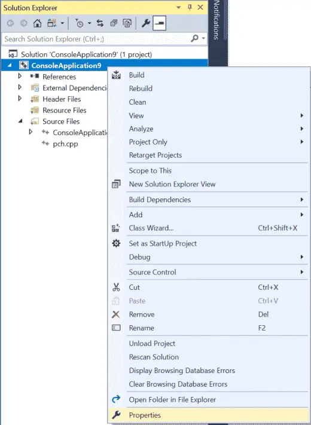
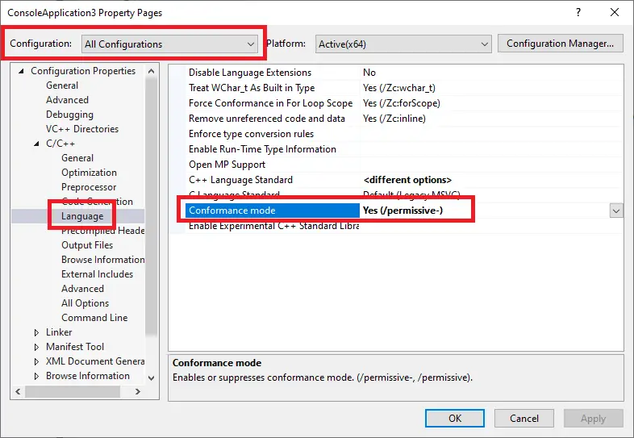
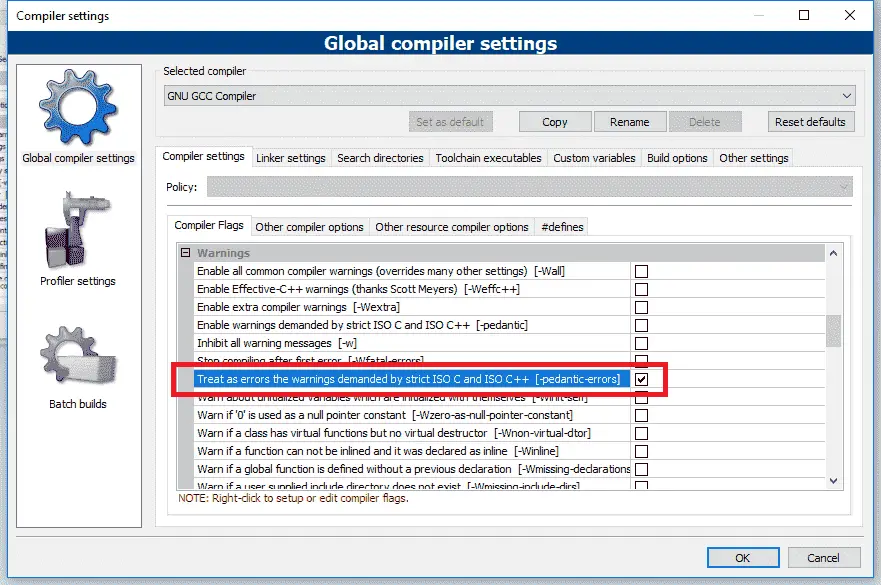

The C++ standard defines rules about how programs should behave in specific circumstances. And in most cases, compilers will follow these rules. However, many compilers implement their own changes to the language, often to enhance compatibility with other versions of the language (e.g. C99), or for historical reasons. These compiler-specific behaviors are called compiler extensions.
Writing a program that makes use of a compiler extension allows you to write programs that are incompatible with the C++ standard. Programs using non-standard extensions generally will not compile on other compilers (that don’t support those same extensions), or if they do, they may not run correctly.
Frustratingly, compiler extensions are often enabled by default. This is particularly damaging for new learners, who may think some behavior that works is part of official C++ standard, when in fact their compiler is simply over-permissive.
Because compiler extensions are never necessary, and cause your programs to be non-compliant with C++ standards, we recommend turning compiler extensions off.
Best practice
Disable compiler extensions to ensure your programs (and coding practices) remain compliant with C++ standards and will work on any system.
Disabling compiler extensions
For Visual Studio users
To disable compiler extensions, right click on your project name in the Solution Explorer window, then choose Properties:

From the Project dialog, first make sure the Configuration field is set to All Configurations.
Then, click C/C++ > Language tab, and set Conformance mode to Yes (/permissive-) (if it is not already set to that by default).

For Code::Blocks users
Disable compiler extensions via Settings menu > Compiler > Compiler flags tab, then find and check the -pedantic-errors option.

For gcc and Clang users
You can disable compiler extensions by adding the -pedantic-errors flag to the compile command line.
For VS Code users
- Open the tasks.json file, find
"args", and then locate the line"${file}"within that section. - Above the
"${file}"line, add a new line containing the following commands:
"-pedantic-errors",
As of the time of writing, VS Code does not automatically add a newline to the end of code files that are missing it (something that is pedantically required by the C++ standard). Fortunately, we can tell VS Code to do so:
- Open VS Code and go to File (Code if using a Mac) > Preferences > Settings. This will open a settings dialog.
- Enter
insert final newlineinto the search bar. - In both the Workspace Settings and User Settings tabs, ensure the checkbox labeled Files: Insert Final Newline is checked.
Related content
Xcode users can refer to Rory’s comment, who kindly provided instructions.
A reminder
These settings are applied on a per-project basis. You need to set them every time you create a new project, or create a template project with those settings once and use that to create new projects.